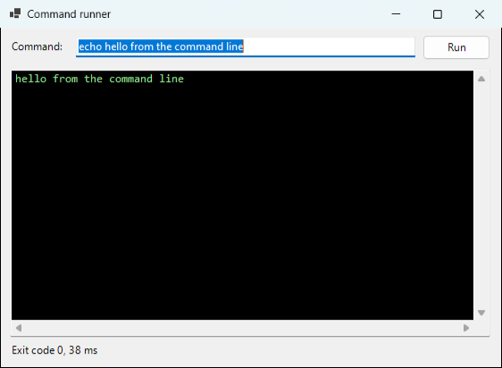

Tutorial 37: A project: a command runner
Many useful programs are a friendly window around a command-line tool. This one lets you type a command, runs it, and shows everything it prints together with its exit code.
What you will learn#
- starting another program from a window application,
- reading its output and error output,
- exit codes,
- handling failure with
try/catch, - a read-only, console-style text area.
The idea#
Almost every tool has a command-line version: git, ping, dotnet, ffmpeg, robocopy. A Ring program starts it with a Process, collects what it prints, and shows it. The same pattern is how you would build a front-end for any such tool: gather the options in controls, build the command line from them, run, show the result.
The program#
# Tutorial 37: a project - a command runner (a window that starts a program and shows what it prints)
load "dotnet.ring"
dnUseDesktop()
using {
"System"
"System.Diagnostics"
"System.Drawing"
"System.Windows.Forms"
}
oForm = ""
oCommand = ""
oOutput = ""
oStatus = ""
func main
oForm = uiForm("Command runner",560,380)
uiLabel(oForm,"Command:",10,12,70,22)
oCommand = uiTextBox(oForm,84,10,380,24)
oCommand.Text = "echo hello from the command line"
uiButton(oForm,"Run",472,8,76,28,"runCommand()")
oOutput = uiMemo(oForm,10,46,538,300)
oOutput {
Font = new Font("Consolas",10)
ReadOnly = True
BackColor = new Color().Black
ForeColor = new Color().LightGreen
}
oStatus = uiLabel(oForm,"Type a command and press Run",10,352,538,22)
uiTest(oForm,"selfTest()")
uiRun(oForm)
uiEnd()
# Run "cmd /c <command>", wait for it, show everything it printed and its exit code
func runCommand
cCommand = trim(oCommand.Text)
if cCommand = ""
return
ok
oInfo = new ProcessStartInfo() {
FileName = "cmd"
Arguments = "/c " + cCommand
RedirectStandardOutput = True
RedirectStandardError = True
UseShellExecute = False
CreateNoWindow = True
}
oStatus.Text = "Running..."
oWatch = new Stopwatch()
oWatch.Start()
try
oProcess = new Process().Start([ :startInfo = oInfo ])
cOut = oProcess.StandardOutput.ReadToEnd()
cErr = oProcess.StandardError.ReadToEnd()
oProcess.WaitForExit(NULL)
oWatch.Stop()
oOutput.Text = cOut + cErr
oStatus.Text = "Exit code " + oProcess.ExitCode + ", " + oWatch.ElapsedMilliseconds + " ms"
oProcess.Dispose()
catch
oOutput.Text = "Could not run the command: " + cCatchError
oStatus.Text = "Failed"
done
func selfTest
oCommand.Text = "echo one && echo two"
runCommand()
dnAssert("the output has both lines",substr(oOutput.Text,"one") > 0 and substr(oOutput.Text,"two") > 0,True)
dnAssert("the exit code is shown",substr(oStatus.Text,"Exit code 0") > 0,True)
oCommand.Text = "dir c:\folder\that\does\not\exist"
runCommand()
dnAssert("an error text appears",len(trim(oOutput.Text)) > 0,True)
dnAssert("the exit code is not 0",substr(oStatus.Text,"Exit code 0") = 0,True)
oCommand.Text = "echo done"
runCommand()
dnAssert("the status",substr(oStatus.Text," ms") > 0,True)
SELFTEST OK (5 checks)How it works#
Describing the program to start#
A ProcessStartInfo says what to run:
| Property | Meaning |
|---|---|
FileName = "cmd" | the program: the Windows command interpreter |
Arguments = "/c " + cCommand | /c means "run this command and then exit" |
RedirectStandardOutput = True | capture what it prints |
RedirectStandardError = True | capture its error messages (a different stream) |
UseShellExecute = False | start it directly (needed for redirecting) |
CreateNoWindow = True | do not open a console window |
Using cmd /c lets the user type anything that the command prompt understands, including && to chain commands and built-in commands such as echo and dir.
Running and reading#
Process.Start([ :startInfo = oInfo ]) starts it. StandardOutput.ReadToEnd() waits until the program closes its output, then returns all of it; the same for StandardError. WaitForExit(NULL) waits for the end, and ExitCode is the program's answer: 0 means success, anything else means an error. The program also measures the time with a Stopwatch.
Read the output before WaitForExit, as the program does. If the output is big and nobody reads it, the program blocks when its buffer is full and WaitForExit waits forever. (For both streams of a very chatty program you would read one of them asynchronously.)
Failure#
If the program cannot be started at all (a wrong FileName), Process.Start raises an error: the try / catch shows it in the output box and sets the status to Failed. A program that starts and returns an error code is a different case: you see its messages in StandardError and the exit code in the status line, as the test shows with a folder that does not exist.
The output box#
A TextBox with Multiline, ReadOnly (the user cannot type in it), a monospaced Font (Consolas) and black background with green text looks like a console. ScrollBars come from uiMemo.
Testing#
selfTest runs echo one && echo two and checks that both lines are in the box, that the exit code is 0; then dir of a non-existing folder: the box has an error text and the exit code is not 0.
A command runner executes whatever is typed. That is fine on your own computer. Never build a command line from text that came from somebody else (a web form, a file) without checking it: the person could add && del to it.
What you learned#
ProcessStartInfo+Processrun any program,- output and error output are separate streams,
- the exit code tells success or failure,
- a window around a command-line tool.
Exercises#
- Add a Stop button that kills a long-running command (
oProcess.Kill(); the process must be a global variable). - Keep a history: a
ComboBoxwith the last ten commands. - Make a ping window: a host box, a Ping button and the result in plain text.
- Run a command in a given folder (
WorkingDirectory).